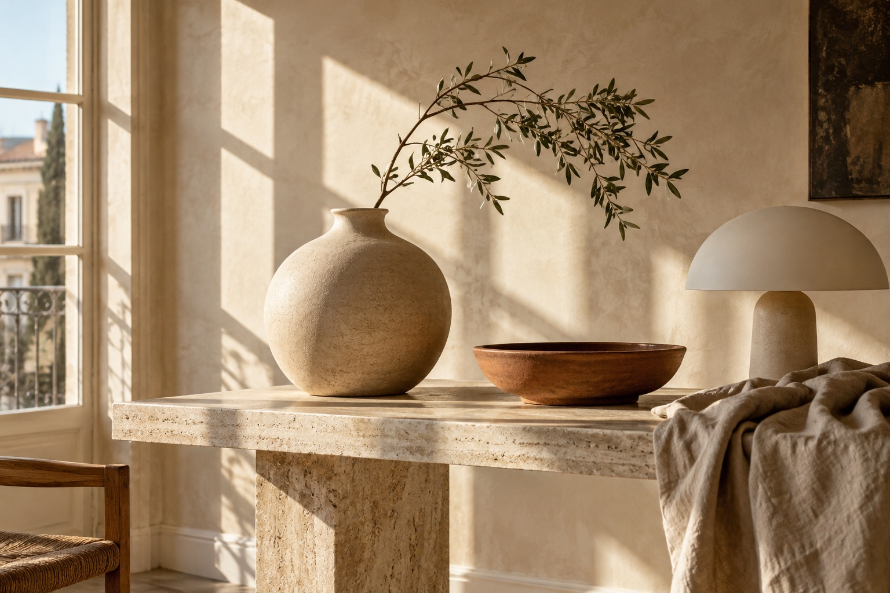
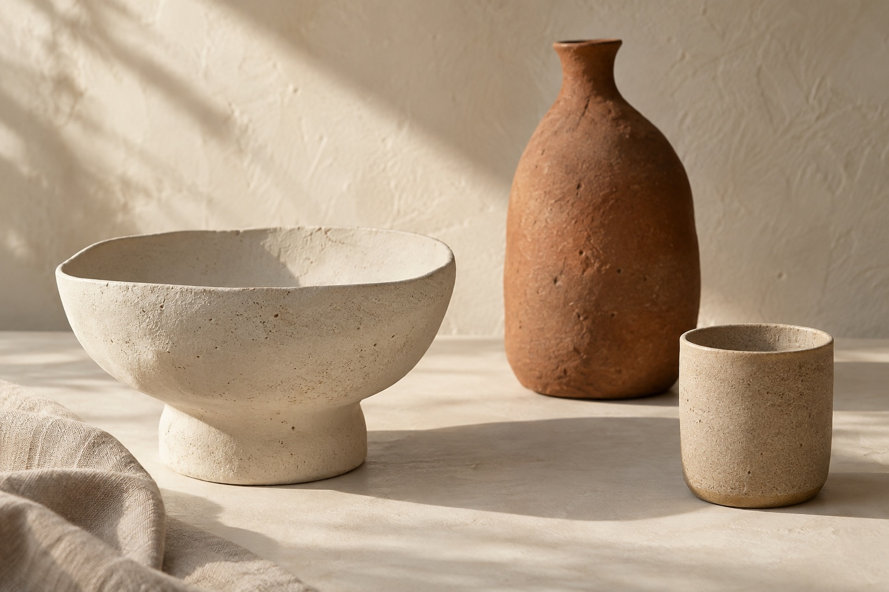

01 / Chalk
The Pedestal Bowl
A generous shape for fruit, flowers,
or simply a little breathing room.
Objects with a quiet presence
Thoughtful objects for the spaces
and rituals that make a life.

A place for everything
Earthy textures and generous shapes. Discover the bowl, cup and vase in our first collection below.
Explore the ceramic edit ↗A soft glow, a sculptural silhouette. Our concept lighting collection explores warm, diffused light and natural mineral finishes.
Linen for the table, wood for the hand, and small objects that make familiar rituals feel considered. A preview of the next chapter.
The first collection
Three forms. Endless little rituals.

A generous shape for fruit, flowers,
or simply a little breathing room.
A warm, unhurried start. Textured
stoneware that sits softly in the hand.
For one branch, a handful of stems,
or nothing at all.
A local demo bag. Nothing is purchased.
The FORME philosophy
We imagine a home built slowly. A well-used cup. A light left on. Objects chosen for how they feel, and how they become part of your day.
FORME is a fictional study in considered living: natural textures, useful forms and an appreciation for the beautifully ordinary.
Find your everyday companion ↗